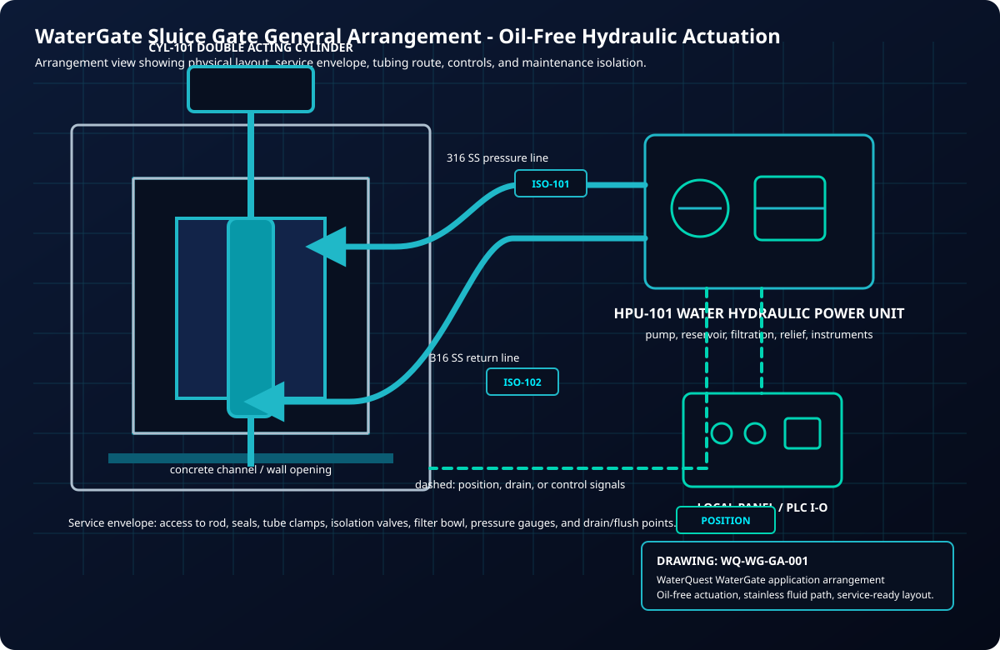
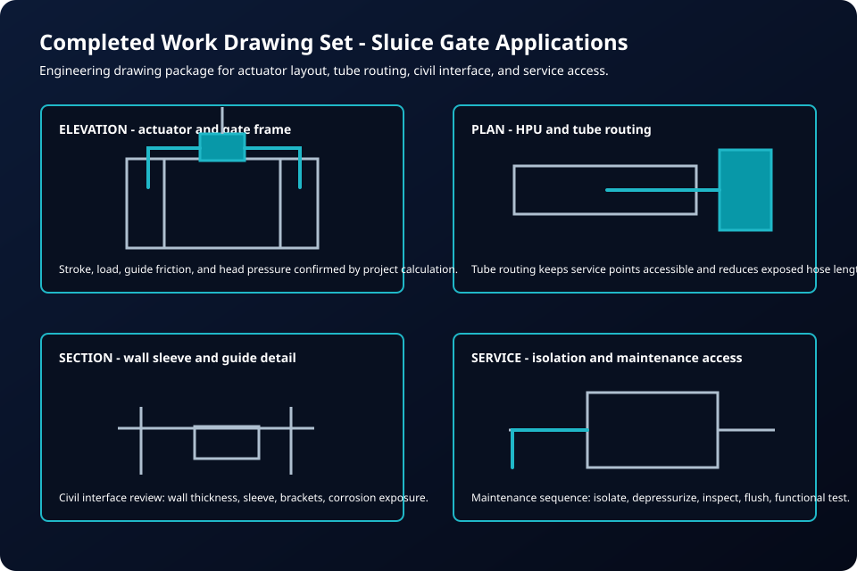

Water hydraulic actuation for changing tidal loads.
Control a coastal gate as the tide and load change. Water hydraulic actuation removes oil from the chosen working circuit, with movement in both directions, salt exposure and service access designed around the site.


Design Concerns
Salt water changes the details.
A coastal gate package should consider splash zone exposure, galvanic compatibility, access for rinsing, tube support spacing, enclosure protection, control-panel location, drain routing, and seasonal service. If seawater is used as the operating medium, filtration and material compatibility become central design inputs.
WaterQuest can configure the package for tap water, conditioned water, or seawater depending on the site and maintenance philosophy. The final decision depends on water availability, freezing risk, salinity, biological growth, filtration, and operator routines.
Marine package priorities
Stainless fittings, tube, manifolds, and exposed wetted hardware.
Flush points and service procedures for salt, sediment, and biological debris.
Remote command, position feedback, alarms, and fault status for hard-to-access structures.
Service valves, drain points, enclosure placement, and safe maintenance clearances.

Recommended Review Inputs
What WaterQuest needs to size the package.
Design the marine system around corrosion and service reality.
Send drawings, site exposure details, water source, and operating requirements.